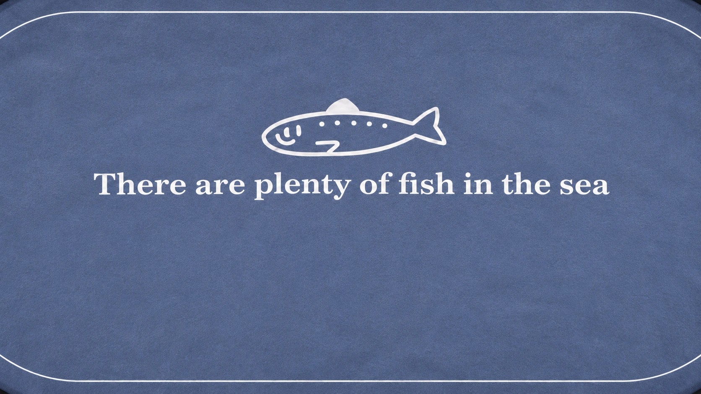

いわし赤坂で、
初めてのポーカーを。
ハンドを選んで、チップを置く。赤坂見附駅から徒歩1分のいわし赤坂では、リングゲームとトーナメントを楽しめます。
初めての方は、遊び方と料金、当日の受付の流れからご覧ください。

Tournaments
本日・近日の大会スケジュール
開催日・参加費・受付締切は店舗の大会カレンダーで確認できます。

来店予算の目安
2026年11月19日の店舗掲載例です。リングの開催状況と大会の参加費は、その日の案内をご確認ください。
POKER ROOM
店舗情報・アクセス

Poker House いわし赤坂
赤坂見附駅から徒歩1分
- 住所
- 東京都港区赤坂3-10-3 黛ビル3F
- 営業時間
- 平日 17:00〜翌5:00
土日 13:00〜翌5:00
周辺地図を表示
FAQ
初めての方の来店・参加ガイド
初めてです。来店までの流れは？
まず遊ぶゲームと料金を確認します。大会なら、出たい回の詳細で開始時刻と受付締切を確認し、赤坂見附の黛ビル3階で受付してください。PokerFansで予約した方は、受付でポーカーIDとニックネームをお伝えください。
予約はできますか？
大会は各回の公式ページにある「参加予約」から申し込めます。リングゲームの当日の空席は、来店前に店舗へお電話ください。
ルールを教わることはできますか？
初心者講習の実施日や所要時間は、来店希望日を添えて店舗へお問い合わせください。